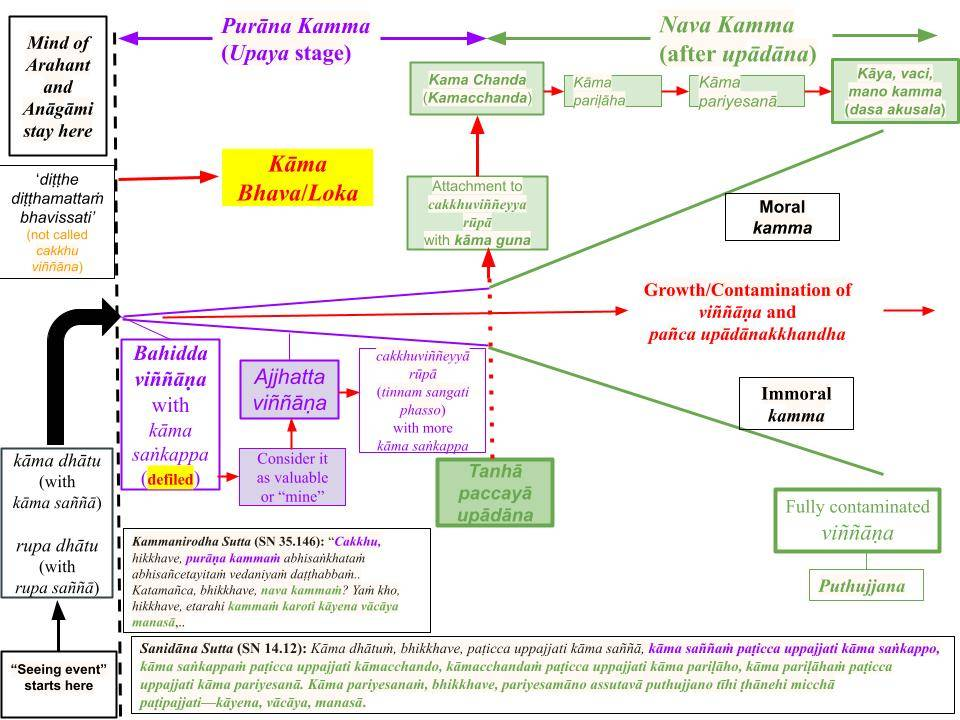

Kāma guṇa refers to "false, mind-made characteristics" that an ignorant mind assigns to sensory inputs (visuals, sounds, odors, tastes, touches, and dhammā). Because of kāma guṇa, we attach (taṇhā) to worldly things, thinking they can bring us happiness. Minds of Arahants do not generate kāma guṇa.
October 6, 2019; last revised December 17, 2025
Most Vedanā Are Mind-Made
1. In the post, "Vipāka Vēdanā and “Samphassa jā Vēdanā” in a Sensory Event," we first categorized vedanā into two types: vipāka vedanā (sukha, dukkha, and adukkhamasukha vedanā) and samphassa-jā-vedanā (somanassa and domanassa vedanā.) The latter category is mind-made and absent in Arahants.
- Sukha and dukkha vedanā are felt ONLY in the physical body; they are sārīrika vedanā ("sārīra" means "physical body.") Sārīrika vedanā can also be "neutral" or adukkhamasukha vedanā. Anyone born with a physical body (including Arahants) experiences them; the following sutta specifically used sārīrika vedanā to describe the physical pain felt by the Buddha with an injury: “Sakalika Sutta (SN 1.38).”
- All other sensory inputs of sights, sounds, tastes, smells, and memories (dhammā) only lead to adukkhamasukha vedanā.
- However, based on those three types of initial vedanā, a mind could generate "mind-made" samphassa-jā-vedanā.
- We recently identified the origin of such "mind-made" samphassa-jā-vedanā to be "distorted" saññā. Sensory inputs of sights, sounds, tastes, smells, and memories generate likable or repulsive "distorted" saññā, and a mind may attach to such saññā and generate samphassa-jā-vedanā.
- For example, the "sweetness of sugar" and the "bad smell of feces" are "distorted saññā" and not vedanā. But they can lead to samphassa-jā-vedanā. Furthermore, sārīrika vedanā may also give rise to mind-made samphassa-jā-vedanā. For example, in the case of an injury, in addition to physical pain, there is usually "mental pain" when one worries about recovering from that injury.
Samphassa-jā-Vedanā Have Their Origins in "Distorted Saññā"
2. The concept of "distorted saññā" is discussed in detail in “Sotapanna Stage via Understanding Perception (Saññā).” There, it was shown that sensations like "sweetness of sugar, attractiveness of a person, the smell of a rose, etc." are not sukha or dukkha vedanā. They are "distorted saññā."
- Anyone born in kāma loka automatically generates specific "kāma saññā" for a given sensory object. Thus, such "distorted saññā" arise in Arahants as well as in average humans (puthujjana.)
- However, while the mind of a puthujjana will automatically attach to such "distorted saññā," the mind of an Arahant would not.
- When the mind of a puthujjana attaches to such "distorted saññā," that is immediately followed by "mind-made vedanā" or samphassa-jā-vedanā.
- This sequential (and rapid) attachment process is discussed in detail in several posts, the last being "Purāna and Nava Kamma – Sequence of Kamma Generation."
Steps in Kamma Accumulation
3. Attachment to an ārammaṇa does not happen in "one-shot." For example, when looking at an external object, our eyes capture the image not in a single image (as a camera would), but in many snapshots, each providing only an incomplete picture. That process is described in “Vision Is a Series of “Snapshots” – Movie Analogy“ and “Seeing Is a Series of ‘Snapshots.’“
- However, it happens so fast that we feel like we see an object in "one shot." The Buddha analyzed that process on an even faster time scale. That is an "ultra-fast process" (occurring within a billionth of a second) and is discernible only to the mind of a Buddha. Let us first examine the temporal sequence described by the Buddha in several suttās and the Abhidhamma. They provide a self-consistent picture compatible with recent scientific findings.
- The steps are as follows: Kāma dhātu TO kāma saññā TO kāma saṅkappa TO kāmacchanda TO kāma pariḷāha TO kāma pariyesanā, which leads to kamma accumulation via the mind, speech, and body, i.e., mano, vaci, and kāya kamma. These steps were briefly discussed using the chart below in the post "Purāna and Nava Kamma – Sequence of Kamma Generation."

Download/Print: “Purana and Nava Kamma -2-revision 3“
Steps in Kamma Accumulation Stop Automatically for Arahants
4. The chart shows that the mind starts at the "kāma dhātu" stage upon receiving an ārammaṇa (Note: I have revised the previous chart to indicate the difference in "viññāna expansion" for two types of ārammaṇa.) The sequence of kamma accumulation is in the “Sanidāna Sutta (SN 14.12)“ and was discussed in detail (especially the beginning steps) in the post “Upaya and Upādāna – Two Stages of Attachment.” I highly recommend reading it again. At the time of its posting, many people probably did not understand it. That sequence is:
- “Kāma dhātuṁ, bhikkhave, paṭicca uppajjati kāma saññā, kāma saññaṁ paṭicca uppajjati kāma saṅkappo, kāma saṅkappaṁ paṭicca uppajjati kāmacchando, kāmacchandaṁ paṭicca uppajjati kāma pariḷāho, kāma pariḷāhaṁ paṭicca uppajjati kāma pariyesanā.” OR “Attachment to kāma dhātu leads to kāma saññā, attachment to kāma saññā leads to kāma saṅkappa, attachment to kāma saṅkappa leads to kāmacchanda..and so on to kāma pariyesanā.“
5. The critical point that needs to be pointed out is the following. "Kāma saṅkappa" starts arising only AFTER the "kāma saññā" step. As stated in the "Nibbedhika Sutta (AN 6.63)" kāma rāga arises ONLY with kāma saṅkappa: "Saṅkappa rāgo purisassa kāmo" OR "kāma rāga is defined as kāma saṅkappa (mano saṅkhāra contaminated with rāga.)"
- Such mano saṅkhāra arise within a billionth of a second without us realizing it. The arising of kāma rāga cannot be avoided if "kāma rāga anusaya/samyojana" is intact.
- Since Arahants and Anagamis have eliminated "kāma rāga anusaya/samyojana," that second step DOES NOT occur for them. Thus, their minds DO NOT proceed beyond the kāma saññā step. The remaining steps apply only to those below the Anāgāmi stage.
6. The reason for Arahant's mind not proceeding beyond the "kāma saññā" step was discussed using a different way in the post "Saññā – All Our Thoughts Arise With 'Distorted Saññā.'" See #9 - #12 in that post. The following is a brief overview.
-
The “Upavāṇasandiṭṭhika Sutta (SN 35.70)” states, “Idha pana, upavāṇa, bhikkhu cakkhunā rūpaṁ disvā rūpappaṭisaṁvedī ca hoti rūparāgappaṭisaṁvedī ca” OR “Upavāna, take the case when a bhikkhu sees a sight with their eyes and also generates the desire for the sight.”
-
In the verse “rūpappaṭisaṁvedī” means “rupa paṭisaṁvedī” and “rūparāgappaṭisaṁvedī” means “rupa rāga paṭisaṁvedī.” Just seeing (without attachment, but still with "distorted saññā") happens with “rupa paṭisaṁvedī,” and the attachment happens with “rupa rāga paṭisaṁvedī.”
- Thus, an Arahant will only go through the “rupa paṭisaṁvedī” but NOT the “rūpa rāga ppaṭisaṁvedī” step. A bhikkhu below the Arahant/Anāgāmi stages goes through both steps in the above verse. Note that "rupa" here means all five types of rupa present in the kāma loka and does NOT refer to "rupa loka."
Steps in Kamma Accumulation for a Puthujjana
7. The first two steps in #3 and #4 take place simultaneously in the mind of a puthujjana upon receiving the sensory input, i.e., in the first citta vithi. Thus, at the step “Kāma dhātuṁ, bhikkhave, paṭicca uppajjati kāma saññā" in the “Sanidāna Sutta (SN 14.12)“ BOTH “rupapaṭisaṁvedī” and “rūpa rāga ppaṭisaṁvedī” occur for a anyone with "kāma rāga anusaya/samyojana."
Two Stages of "Viññāna Expansion"
8. The increasing contamination of a mind (viññāna) with time is shown as two "expansions" (represented by two "cones" in the above chart):
- In the "purāna kamma" stage, contamination occurs gradually, and we are not yet aware of sensory input.
- The contamination is stronger in the "nava kamma" stage, where kamma accumulation happens consciously (with javana citta).
- That second stage of expansion occurs ONLY IF we consciously attach to the ārammaṇa with the mindset that it can provide us with happiness. That is where "kāma guṇa" comes into play.
- First, let us clarify the emergence of "bahidda viññāna" and "ajjhatta viññāna" in the "purāna kamma" stage, using the chart above.
Arising of "Bahidda viññāna" and "Ajjhatta Viññāna"
9. As we noted above, the mind of a puthujjana gets attached to ANY sensory input (ārammaṇa) in kāma loka at the very first instance. At the outset of that process, a "defiled viññāna" arises as "bahidda viññāna" and strengthens to "ajjhatta viññāna" via only "kāma saṅkappa," which are"mano kamma." No javana cittas arise at these steps.
- The first instance of "weak attachment" is said to occur with "bahidda viññāna."
- In the next step of "kāma saññaṁ paṭicca uppajjati kāma saṅkappo," that viññāna gets a bit stronger at the "ajjhatta viññāna" stage; see the chart above.
- Right after the "ajjhatta viññāna" stage, the mind starts attaching to "its version of the external rupa" ("cakkhuviññeyyā rūpa" means a "rupa prepared by cakkhuviññāṇa.")
Transition to the "Nava Kamma" Stage with Kāma Guṇa
10. If that "cakkhuviññeyyā rūpa" is tempting to the mind, it will examine whether that "mind-made rupa" has enough "kāma guṇa," i.e., whether it is "enticing enough." Note that "kāma guṇa" is NOT in the external object.
- The "Kāmaguṇa Sutta (AN 9.65)" states: "Pañcime, bhikkhave, kāmaguṇā." It is misleading to translate that as "There are five kāma guṇā."
- Here, “pañca kāma guṇa” does not mean “five types of guṇa.” The five refers to the five types of kāma (sensual pleasures with five physical senses) available in kāma loka. There are six types of “guṇa.“
- Those six types are: "iṭṭhā, kantā, manāpā, piyarūpā, kāmūpasaṁhitā rajanīyā."
11. The concept of kāma guṇā and the six types are discussed in #10 through #13 in the post "Kāma Guṇa, Kāma, Kāma Rāga, Kāmaccandha" and quoted below.
- The first one, iṭṭhā means “promise of fulfillment,” which goes with our perceived “nicca nature of this world.” However, the world is of anicca nature, and thus, this “iṭṭhā characteristic” is based on the ignorance of the fundamental nature.
- The three characteristics kantā, manāpā, and piyarūpā express similar meanings: desirable, agreeable, and pleasant (and emphasize the iṭṭhā characteristic). The fifth, “kāmūpasaṁhitā,” means “induce sensuality.” The last one, “rajanīyā,” means “generating defilements” and thus can make one do immoral things to fulfill one’s desires.
- The last two clarify that “kāma guṇa” refers mainly to the kāma loka.
Kāma Guṇa Come Into Play After "Ajjhatta Viññāna"
12. At the "ajjhatta viññāna" stage, a specific person's " gati " comes into play. "Ajjhatta" means "one's own."
- While the "bahidda viññāna" is triggered with kāma raga anusaya/samyojana, the "ajjhatta viññāna" also depends on one's gati at that time.
- Furthermore, even for the same person, "kāma gati" will manifest at different levels depending on the conditions. While watching an erotic movie, "kāma gati" will be strengthened, but while listening/reading Dhamma, it will be non-existent.
- Depending on the strength of the "kāma guṇa" generated for that sensory input (ārammaṇa), it leads to further contamination of the viññāna. This is where the "second cone" starts in the chart above, signifying the "nava kamma" stage.
Mind Starts Consciously Accumulating Kamma in the "Nava Kamma" Stage
13. As shown in the chart, attachment to the "mind-made rupa" strengthens with "kāma guṇa" and "kāmacchanda" (or kāma chanda) arising in the mind.
- That means one is firmly attached, and now the mind is in a "state of agitation" ("kāma pariḷāha") until its desire to enjoy "more of it" is satisfied. Thus, it starts investigating ways to fulfill that desire, i.e., one engages in "kāma pariyesana."
- That is when one begins to perform kamma through speech and actions; at that point, one is fully engaged in mano, vaci, and kāya kamma.
An Example
14. For example, consider person X going to a meal at a friend's house. X is offered a dish he has not tasted before and finds it quite tasty.
- The taste of the food was the "kāma saññā" (in this case, "rasa saññā") that triggered kāma saṅkappa automatically (the first step generating "bahidda viññāna. As more kāma saṅkappa arise, his "jivhā indriya" becomes "jivhā āyatana" at the second of "ajjhatta viññāna." See the above chart.
- If the dish is enticing (i.e., if it triggers strong "kāma guṇa"), X's mind will attach to the "rasa rupa" created in his mind by the "tasty dish." That is the "kāma chanda" stage in the chart.
- Now, X wants to know more about the dish and starts asking the friend how to make it or where to buy it. These involve the remaining steps leading to kāya, vaci, and mano kamma.
- If X got really attached to that meal, he may tell others about it the next day and even try to make it himself. All those involve vaci and kāya saṅkhāra. If that is the case, the "viññāna" (expectation of enjoying the meal again) that arose in his mind was strong.
Kāma Rāga Means Getting Attached to "Mind-Made Vedanā"
15. The human world has abundant enticing sights, sounds, tastes, odors, and bodily comforts. Those are not kāma. They are kāma guṇa that we created by being born with this physical body; this birth occurred only because we had craved such a body in the past. Comprehending that requires understanding how the "bhava paccayā jāti" step in Paṭicca Samuppāda led to the birth of the present physical body. That is vipassanā!
- This physical body is created by kammic energy to provide that "distorted saññā." That is why even an Arahant will taste the "sweetness of a tasty meal." But his mind has fully comprehended how that "distorted saññā" arises and that it is a "mirage" or a "magic show." The Buddha called saññā a mirage and viññāna magician in the “Pheṇapiṇḍūpama Sutta (SN 22.95),” and we discussed that in the post, “Sotapanna Stage and Distorted/Defiled Saññā.”
- Therefore, the next step of generating kāma saṅkappa and getting to the "ajjhatta viññāna" stage does not occur for an Arahant.
- Anyone not released from the kāma loka will get to the first steps of generating "bahidda viññāna" and the "ajjhatta viññāna" stages, i.e., will go through the "purāna kamma" stage.
- But the second stage of "nava kamma" will be initiated only if the ārammaṇa is strong enough to trigger the conscious attachment (taṇhā) to that "mind-made rupa." If that happens, then the "standard Paṭicca Samuppāda" process will kick in at the "taṇhā paccayā upādāna" step, leading to a "rapid and strong expansion of viññāna"; see the chart above.
First Step for Removing Kāma Rāga Is To Remove Kāma Guṇa
16. First, one must stop the "nava kamma" stage from starting. That requires eliminating kāma guṇa by losing one's attachment to "sensual sensory events" or to mind-pleasing ārammaṇa.
- The "Yogakkhemi Sutta (SN 35.104)" states that the Buddha has cut off kāma guṇa at their roots. Of course, that is true for Arahants and Anāgāmis too.
- That becomes easier when one realizes that all mind-pleasing ārammaṇa are "fake" or a "magic show" as explained in #15.
Related Posts
17. All related posts in “Sotapanna Stage via Understanding Perception (Saññā).”
Kāma guṇa refere-se às “características falsas, criadas pela mente” que uma mente ignorante atribui aos estímulos sensoriais (imagens, sons, odores, sabores, sensações táteis e dhammā). Por causa do kāma guṇa, nos apegamos (taṇhā) às coisas mundanas, pensando que elas podem nos trazer felicidade. As mentes dos Arahants não geram kāma guṇa.
6 de outubro de 2019; última revisão em 17 de dezembro de 2025
A maioria das vedanā é criada pela mente
1. Na postagem “Vipāka Vēdanā e ‘Samphassa jā Vēdanā’ em um evento sensorial”, classificamos inicialmente as vedanā em dois tipos: vipāka vedanā (sukha, dukkha e adukkhamasukha vedanā) e samphassa-jā-vedanā (somanassa e domanassa vedanā). A última categoria é criada pela mente e ausente nos Arahants.
- As vedanā sukha e dukkha são sentidas APENAS no corpo físico; elas são sārīrika vedanā (“sārīra” significa “corpo físico”). A sārīrika vedanā também pode ser “neutra” ou adukkhamasukha vedanā. Qualquer pessoa nascida com um corpo físico (incluindo os Arahants) as experimenta; o seguinte sutta utilizou especificamente sārīrika vedanā para descrever a dor física sentida pelo Buddha devido a uma lesão: “Sakalika Sutta (SN 1.38)”.
- Todos os outros estímulos sensoriais — imagens, sons, sabores, odores e memórias (dhammā) — levam apenas a adukkhamasukha vedanā.
- No entanto, com base nesses três tipos de vedanā inicial, a mente pode gerar samphassa-jā-vedanā “criada pela mente”.
- Recentemente, identificamos que a origem desse samphassa-jā-vedanā “criado pela mente” é um saññā “distorcido”. Estímulos sensoriais como imagens, sons, sabores, cheiros e memórias geram saññā “distorcida” — que pode ser agradável ou repulsiva —, e a mente pode se apegar a tal saññā e gerar samphassa-jā-vedanā.
- Por exemplo, a “doçura do açúcar” e o “cheiro ruim de fezes” são “saññā distorcida” e não vedanā. Mas podem levar à samphassa-jā-vedanā. Além disso, o sārīrika vedanā também pode dar origem a um samphassa-jā-vedanā criado pela mente. Por exemplo, no caso de uma lesão, além da dor física, geralmente há uma “dor mental” quando a pessoa se preocupa com a recuperação dessa lesão.
Samphassa-jā-Vedanā Tem Sua Origem em “Saññā Distorcida”
2. O conceito de “saññā distorcida” é discutido em detalhes em “O Estágio de Sotapanna por meio da Compreensão da Percepção (Saññā)”. Lá, foi demonstrado que sensações como “a doçura do açúcar, a atratividade de uma pessoa, o cheiro de uma rosa etc.” não são vedanā de sukha ou dukkha. Elas são “saññā distorcida”.
- Qualquer pessoa nascida no kāma loka gera automaticamente uma “kāma saññā” específica para um determinado objeto sensorial. Assim, tal “saññā distorcida” surge tanto nos Arahants quanto nos seres humanos comuns (puthujjana).
- No entanto, enquanto a mente de um puthujjana se apega automaticamente a tais “saññā distorcidas”, a mente de um Arahant não o faz.
- Quando a mente de um puthujjana se apega a tais “saññā distorcidas”, isso é imediatamente seguido por “vedanā produzida pela mente” ou samphassa-jā-vedanā.
- Esse processo sequencial (e rápido) de apego é discutido em detalhes em várias postagens, sendo a última delas “Purāna e Nava Kamma – Sequência da Geração de Kamma”.
Etapas na acumulação de kamma
3. O apego a um ārammaṇa não ocorre de “uma só vez”. Por exemplo, ao olhar para um objeto externo, nossos olhos capturam a imagem não em uma única imagem (como faria uma câmera), mas em muitos instantâneos, cada um fornecendo apenas uma imagem incompleta. Esse processo é descrito em “A visão é uma série de ‘instantâneos’ – analogia com o cinema” e “Ver é uma série de ‘instantâneos’”.
- No entanto, isso acontece tão rápido que temos a sensação de ver um objeto em “um único instante”. O Buddha analisou esse processo em uma escala de tempo ainda mais rápida. Trata-se de um “processo ultrarrápido” (que ocorre em um bilionésimo de segundo) e é discernível apenas pela mente de um Buddha. Vamos primeiro examinar a sequência temporal descrita pelo Buddha em vários suttās e no Abhidhamma. Eles fornecem um quadro coerente e compatível com descobertas científicas recentes.
- As etapas são as seguintes: Kāma dhātu → kāma saññā → kāma saṅkappa → kāmacchanda → kāma pariḷāha → kāma pariyesanā, o que leva ao acúmulo de kamma por meio da mente, da fala e do corpo, ou seja, mano, vaci e kāya kamma. Essas etapas foram brevemente discutidas com o auxílio do quadro abaixo na postagem “Purāna e Nava Kamma – Sequência da Geração de Kamma”.
Baixar/Imprimir: “Purāna e Nava Kamma -2- revisão 3“
As etapas do acúmulo de kamma cessam automaticamente para os arahants
4. O gráfico mostra que a mente começa no estágio “kāma dhātu” ao receber um ārammaṇa (Observação: revisei o gráfico anterior para indicar a diferença na “expansão de viññāna” para dois tipos de ārammaṇa.) A sequência do acúmulo de kamma está no “Sanidāna Sutta (SN 14.12)” e foi discutida em detalhes (especialmente as etapas iniciais) na postagem “Upaya e Upādāna – Dois Estágios do Apego”. Recomendo vivamente que o leiam novamente. Na época em que foi publicado, muitas pessoas provavelmente não o compreenderam. Essa sequência é:
- “Kāma dhātuṁ, bhikkhave, paṭicca surge a percepção do prazer (kāma saññā); a partir da percepção do prazer (kāma saññaṁ) surge o desejo pelo prazer (kāma saṅkappo); a partir do desejo pelo prazer (kāma saṅkappaṁ) surge o apego ao prazer (kāmacchando), kāmacchandaṁ paṭicca uppajjati kāma pariḷāho, kāma pariḷāhaṁ paṭicca uppajjati kāma pariyesanā.” OU “O apego ao dhātu kāma leva à saññā kāma; o apego à saññā kāma leva ao saṅkappa kāma; o apego ao saṅkappa kāma leva ao kāmacchanda...e assim por diante até kāma pariyesanā.”
5. O ponto crítico que precisa ser destacado é o seguinte. “Kāma saṅkappa” começa a surgir SOMENTE APÓS a etapa de “kāma saññā”. Conforme afirmado no “Nibbedhika Sutta (AN 6.63)”, o kāma rāga surge SOMENTE com o kāma saṅkappa: “Saṅkappa rāgo purisassa kāmo” OU “kāma rāga é definido como kāma saṅkappa (mano saṅkhāra contaminado por rāga).”
- Esses mano saṅkhāra surgem em um bilionésimo de segundo sem que percebamos. O surgimento do kāma rāga não pode ser evitado se o “kāma rāga anusaya/samyojana” estiver intacto.
- Como os Arahants e os Anagamis eliminaram o “kāma rāga anusaya/samyojana”, essa segunda etapa NÃO ocorre para eles. Assim, suas mentes NÃO avançam além da etapa do kāma saññā. As etapas restantes se aplicam apenas àqueles que estão abaixo do estágio de Anāgāmi.
6. A razão pela qual a mente do Arahant não prossegue além da etapa “kāma saññā” foi discutida de uma maneira diferente na postagem “Saññā – Todos os nossos pensamentos surgem com ‘saññā distorcida’”. Veja os pontos 9 a 12 dessa postagem. A seguir, uma breve visão geral.
-
O “Upavāṇasandiṭṭhika Sutta (SN 35.70)” afirma: “Idha pana, upavāṇa, bhikkhu cakkhunā rūpaṁ disvā rūpappaṭisaṁvedī ca hoti rūparāgappaṭisaṁvedī ca” OU “Upavāna, considere o caso em que um bhikkhu vê uma imagem com os olhos e também gera o desejo por essa imagem.”
-
No verso, “rūpappaṭisaṁvedī” significa “rupa paṭisaṁvedī” e “rūparāgappaṭisaṁvedī” significa “rupa rāga paṭisaṁvedī”. A simples percepção (sem apego, mas ainda com “saññā distorcida”) ocorre com “rupa paṭisaṁvedī”, e o apego ocorre com “rupa rāga paṭisaṁvedī”.
- Assim, um Arahant passará apenas pela etapa “rupa paṭisaṁvedī”, mas NÃO pela etapa “rūpa rāga paṭisaṁvedī”. Um bhikkhu abaixo dos estágios de Arahant/Anāgāmi passa por ambas as etapas no versículo acima. Observe que “rupa” aqui significa todos os cinco tipos de rupa presentes no kāma loka e NÃO se refere ao “rupa loka”.
Etapas na acumulação de kamma para um puthujjana
7. As duas primeiras etapas nos itens 3 e 4 ocorrem simultaneamente na mente de um puthujjana ao receber o estímulo sensorial, ou seja, no primeiro citta vithi. Assim, na etapa “Kāma dhātuṁ, bhikkhave, paṭicca uppajjati kāma saññā” no “Sanidāna Sutta (SN 14.12)” TANTO “rupapaṭisaṁvedī” quanto “rūpa rāga paṭisaṁvedī” ocorrem para qualquer pessoa com “kāma rāga anusaya/samyojana”.
Dois Estágios da “Expansão do Viññāna”
8. A crescente contaminação da mente (viññāna) com o passar do tempo é representada por duas “expansões” (representadas por dois “cones” no gráfico acima):
- No estágio “purāna kamma”, a contaminação ocorre gradualmente, e ainda não estamos cientes dos estímulos sensoriais.
- A contaminação é mais forte no estágio “nava kamma”, onde o acúmulo de kamma ocorre conscientemente (com javana citta).
- Esse segundo estágio de expansão ocorre SOMENTE SE nos apegarmos conscientemente ao ārammaṇa com a mentalidade de que ele pode nos proporcionar felicidade. É aí que o “kāma guṇa” entra em ação.
- Primeiro, vamos esclarecer o surgimento do “bahidda viññāna” e do “ajjhatta viññāna” no estágio “purāna kamma”, usando o quadro acima.
Surgimento de “Bahidda viññāna” e “Ajjhatta Viññāna”
9. Conforme observamos acima, a mente de um puthujjana apega-se a QUALQUER estímulo sensorial (ārammaṇa) no kāma loka logo no início. No início desse processo, um “viññāna impuro” surge como “bahidda viññāna” e se fortalece até se tornar “ajjhatta viññāna” exclusivamente por meio de “kāma saṅkappa”, que são “mano kamma”. Nenhuma javana citta surge nessas etapas.
- Diz-se que a primeira instância de “apego fraco” ocorre com o “bahidda viññāna”.
- Na etapa seguinte de “kāma saññaṁ paṭicca uppajjati kāma saṅkappo”, esse viññāna se torna um pouco mais forte no estágio de “ajjhatta viññāna”; veja o gráfico acima.
- Logo após o estágio de “ajjhatta viññāna”, a mente começa a se apegar à “sua versão da rupa externa” (“cakkhuviññeyyā rūpa” significa uma “rupa preparada pelo cakkhuviññāṇa”).
Transição para o estágio “Nava Kamma” com Kāma Guṇa
10. Se esse “cakkhuviññeyyā rūpa” for tentador para a mente, ela examinará se esse “rupa criado pela mente” possui “kāma guṇa” suficiente, ou seja, se é “suficientemente sedutor”. Observe que o “kāma guṇa” NÃO está no objeto externo.
- O “Kāmaguṇa Sutta (AN 9.65)” afirma: “Pañcime, bhikkhave, kāmaguṇā.” É enganoso traduzir isso como “Existem cinco kāma guṇā”.
- Aqui, “pañca kāma guṇa” não significa “cinco tipos de guṇa”. O número cinco refere-se aos cinco tipos de kāma (prazeres sensuais envolvendo os cinco sentidos físicos) disponíveis no kāma loka. Existem seis tipos de “guṇa”.
- Esses seis tipos são: “iṭṭhā, kantā, manāpā, piyarūpā, kāmūpasaṁhitā rajanīyā”.
11. O conceito de kāma guṇā e os seis tipos são discutidos nos itens 10 a 13 da postagem “Kāma Guṇa, Kāma, Kāma Rāga, Kāmaccandha” e citados abaixo.
- O primeiro, iṭṭhā, significa “promessa de realização”, o que se alinha à nossa percepção da “natureza nicca deste mundo”. No entanto, o mundo é de natureza anicca e, portanto, essa “característica iṭṭhā” baseia-se na ignorância da natureza fundamental.
- As três características kantā, manāpā e piyarūpā expressam significados semelhantes: desejável, agradável e prazeroso (e enfatizam a característica iṭṭhā). A quinta, “kāmūpasaṁhitā”, significa “induzir à sensualidade”. A última, “rajanīyā”, significa “gerar impurezas” e, portanto, pode levar alguém a cometer atos imorais para satisfazer seus desejos.
- Os dois últimos esclarecem que “kāma guṇa” se refere principalmente ao kāma loka.
Kāma Guṇa Entra em Ação Após o “Ajjhatta Viññāna”
12. No estágio do “ajjhatta viññāna”, o “gati” específico de uma pessoa entra em ação. “Ajjhatta” significa “próprio”.
- Enquanto o “bahidda viññāna” é desencadeado pelo kāma raga anusaya/samyojana, o “ajjhatta viññāna” também depende do gati da pessoa naquele momento.
- Além disso, mesmo para a mesma pessoa, o “kāma gati” se manifestará em diferentes níveis, dependendo das condições. Ao assistir a um filme erótico, o “kāma gati” será fortalecido, mas ao ouvir ou ler o Dhamma, ele será inexistente.
- Dependendo da intensidade do “kāma guṇa” gerado para aquele estímulo sensorial (ārammaṇa), isso leva a uma contaminação ainda maior do viññāna. É aqui que o “segundo cone” começa no gráfico acima, significando o estágio do “nava kamma”.
A mente começa a acumular kamma conscientemente no estágio “nava kamma”
13. Conforme mostrado no gráfico, o apego à “rupa criada pela mente” se fortalece com o surgimento de “kāma guṇa” e “kāmacchanda” (ou kāma chanda) na mente.
- Isso significa que a pessoa está firmemente apegada, e agora a mente se encontra em um “estado de agitação” (“kāma pariḷāha”) até que seu desejo de desfrutar “mais disso” seja satisfeito. Assim, ela começa a investigar maneiras de satisfazer esse desejo, ou seja, a pessoa se envolve em “kāma pariyesana”.
- É nesse momento que a pessoa começa a praticar kamma por meio da fala e das ações; nesse ponto, ela está totalmente envolvida no mano, vaci e kāya kamma.
Um exemplo
14. Por exemplo, considere a pessoa X indo para uma refeição na casa de um amigo. Oferecem a X um prato que ele nunca havia provado antes e ele o acha bastante saboroso.
- O sabor da comida foi o “kāma saññā” (neste caso, “rasa saññā”) que desencadeou automaticamente o kāma saṅkappa (o primeiro passo que gera “bahidda viññāna”). À medida que mais kāma saṅkappa surgem, seu “jivhā indriya” torna-se “jivhā āyatana” no segundo estágio do “ajjhatta viññāna”. Veja o gráfico acima.
- Se o prato for tentador (ou seja, se despertar um forte “kāma guṇa”), a mente de X se apegará ao “rasa rupa” criado em sua mente pelo “prato saboroso”. Esse é o estágio “kāma chanda” no gráfico.
- Agora, X quer saber mais sobre o prato e começa a perguntar ao amigo como prepará-lo ou onde comprá-lo. Isso envolve as etapas restantes que levam ao kāya, vaci e mano kamma.
- Se X ficou realmente apegado àquela refeição, ele pode contar aos outros sobre ela no dia seguinte e até tentar prepará-la ele mesmo. Tudo isso envolve vaci e kāya saṅkhāra. Se for esse o caso, o “viññāna” (expectativa de saborear a refeição novamente) que surgiu em sua mente foi forte.
Kāma Rāga Significa Apegar-se à “Vedanā Criada pela Mente”
15. O mundo humano possui abundantes imagens, sons, sabores, odores e confortos corporais sedutores. Esses não são kāma. São kāma guṇa que criamos ao nascer com este corpo físico; esse nascimento ocorreu apenas porque desejamos ardentemente tal corpo no passado. Compreender isso requer entender como a etapa “bhava paccayā jāti” no Paṭicca Samuppāda levou ao nascimento do corpo físico atual. Isso é vipassanā!
- Este corpo físico é criado pela energia kármica para proporcionar essa “saññā distorcida”. É por isso que até mesmo um Arahant sentirá o “sabor de uma refeição saborosa”. Mas sua mente compreendeu plenamente como essa “saññā distorcida” surge e que ela é uma “miragem” ou um “espetáculo de mágica”. O Buddha chamou a saññā de miragem e o viññānade mágico no “Pheṇapiṇḍūpama Sutta (SN 22.95)”, e discutimos isso na postagem, “Estágio de Sotapanna e Saññā Distorcida/Contaminada”.
- Portanto, o próximo passo de gerar kāma saṅkappa e chegar ao estágio de “ajjhatta viññāna” não ocorre para um Arahant.
- Qualquer pessoa que não tenha se libertado do kāma loka chegará aos primeiros passos da geração dos estágios “bahidda viññāna” e “ajjhatta viññāna”, ou seja, passará pelo estágio “purāna kamma”.
- Mas o segundo estágio de “nava kamma” só será iniciado se o ārammaṇa for forte o suficiente para desencadear o apego consciente (taṇhā) a essa “rupa criada pela mente”. Se isso acontecer, então o processo “padrão de Paṭicca Samuppāda” entrará em ação na etapa “taṇhā paccayā upādāna”, levando a uma “expansão rápida e forte de viññāna”; veja o gráfico acima.
O primeiro passo para remover o kāma rāga é remover o kāma guṇa
16. Primeiro, é preciso impedir que o estágio do “nava kamma” se inicie. Isso requer a eliminação do kāma guṇa por meio da perda do apego a “eventos sensoriais sensuais” ou a ārammaṇa que agradam à mente.
- O “Yogakkhemi Sutta (SN 35.104)” afirma que o Buddha cortou o kāma guṇa pela raiz. É claro que isso também se aplica aos Arahants e aos Anāgāmis.
- Isso se torna mais fácil quando se percebe que todos os ārammaṇa que agradam à mente são “falsos” ou um “espetáculo de mágica”, conforme explicado no nº 15.
Postagens relacionadas
17. Todas as postagens relacionadas em “Estágio de Sotapanna por meio da compreensão da percepção (Saññā).”